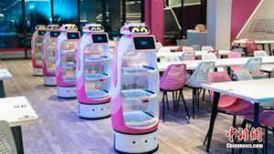
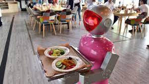
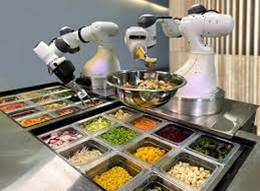
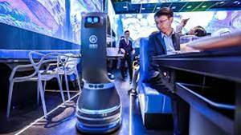

Robotics is an interdisciplinary field that integrates computer science and engineering. ... Such robots attempt to replicate walking, lifting, speech, cognition, or any other human activity. Many of today's robots are inspired by nature, contributing to the field of bio-inspired robotics. Spyce restaurant in Boston is the industry's first fast-casual restaurant with a robotic kitchen. They have a small staff who prepare the ingredients in an off-site kitchen, but all of the actual cooking is done by robots in the store that prepare the dishes guests order on kiosks. Robot technology already is here and could see much wider application in the restaurant industry, especially quick-serve businesses, predicts a new report from Ball State University. Robots are capable of flipping hamburgers, making pizzas and mixing cocktails as bartenders, with more accuracy and less shrinkage. Collaborative robots, or cobots, have seen extensive use in industrial settings, and now they're coming to the kitchen. These robots serve as cooking assistants, performing various tasks to help people prepare meals in their homes.
One good example of robots in restaurants is at the Kauphy Place in Willetton, Western Australia. The food is placed on trays which robots carry to respective tables. As the robot reaches the table, a song is generated from the robot to inform the customer that the food has arrived. The robots turns itself to face the table as an indication for the customer to take the food off the tray and place it on the table. Robots in that restaurant are very polite. They allow other robots to pass if they see other robots serving at tables. The robots have been configured to know that if Robot 1 is futher away from its customer, it will stop to allow Robot 2 to pass. Hence, there is no collision!
WE'RE NOT READY FOR THE AUTOMATED FUTURE
Today's robots are pretty dunderheaded. Tomorrow's robots will be less dunderheaded thanks to advancements in artificial intelligence — particularly machine and deep learning. Humans will be replaced by robots in some jobs and complemented by them in many others.
Take a look at some videos on Robotics in Restaurants



